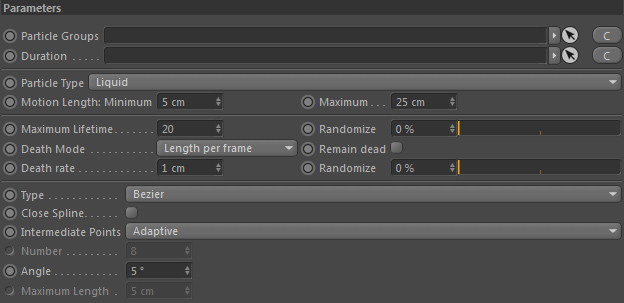

Parameters
Parameters

Particle Groups
Define the Particle Group to read the particles from.
Duration
Define when (temporally) and how long this node operates.
Particle Type
Define which particle type (subgroup) of the input particle groups to use.
Motion Length: Minimum
The minimum distance a particle must have travelled before a new spline path point is generated for it.
If it travelled less than Minimum within one substep, no spline point is generated.
Maximum
The maximum distance a particle can travel (within one framework (sub)step) until a spline point is generated.
Example
A particle travels 20cm and Maximum is set to 10cm. It will generate 2 spline path points. The first at 10cm and the second at 20cm.
A particle travels 20cm and Maximum is set to 10cm. It will generate 2 spline path points. The first at 10cm and the second at 20cm.
Maximum Lifetime
Defines the maximum lifetime (given in frames) until a spline path dies.
Randomize
Randomizes the lifetime.
A value of 0% means all spline paths have the same life time. 100% varies the life time between 0 and Maximum lifetime.
Death Mode
Controls how the traced spline paths die.
One Vertex per frame
Once the lifetime of a spline point ended, it will die. No other spline points of the same path will die even if their lifetime has ended.
Length per frame
A specific used-defined length of the spline path will die off each frame.
Percent per frame
A specific used-defined percentage of the spline path length will die off each frame.
Remain dead
The spline path may die faster than corresponding particle can produce new trace points.
In that case the spline may have completely died.
If you activate this option, no more path traces will be generated if that happens. It will remain dead.
Otherwise the spline path will keep on regenerating a new particle spline path.
Death rate (Length)
Only used if Death Mode = Lenght per frame
The user-defined path length to kill.
Death rate (Percent)
Only used if Death Mode = Percent per frame
The user-defined path length percentage to kill.
Randomize
Randomizes the death rate value.
Type, Close Spline...
Please refer to the Cinema 4D help for these general purpose Cinema 4D spline settings.